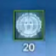
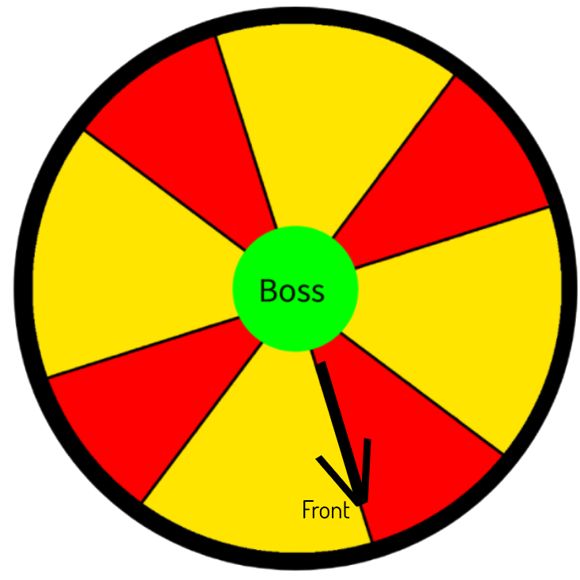
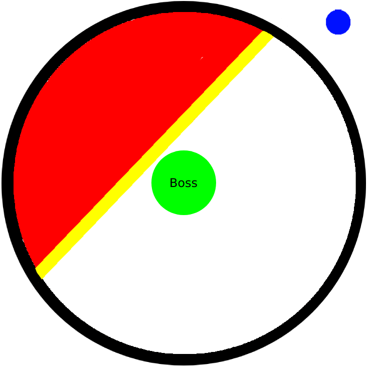
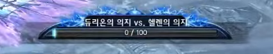

Tenacity / Dungeons / Ice Throne
TIP: Bring a lot of gold with you as you will die more than 20 times.
| Icon | Debuff |
|---|---|
|  | Getting hit by most attacks and even just over time, people will be given a 20 second debuff that is removable.This ticks for 10% of your max hp every tick. This boss is all about hugging your healer so you stay warm and not dead from the cold.. |
First Boss | Normal Mode
Double front slam
Basic attack, hits with right and then left claw on the tank.
Slam, pause and tail swipe
Slams once on the tank, slightly pauses and then swipes its tail on the dps.
Tail swipe can be blocked and iframed. Kaiable.
Secondary aggro rush
Quickly moves to the person with secondary aggro Can also swipe with its tail. Tail swipe can be prevented as he sometimes doesnt do it.
Tail swipe can be blocked and iframed. Kaiable.
Here its also with tail swipe:
Dig
Digs down into the ground, avoiding damage - so its useless to spam skills at it. Follows player with secondary aggro and then appears. Creating a small ice aoe. AoE can be blocked, if you get hit, it doesnt do much damage but stuns you for 5 seconds.
Minions and puddles
Boss says Come out to help me! and spawns minion lizards on the side of the arena in bubbles.
Right after he will kneel down and spit in the air.You will have an arrow near you aiming towards a random direction.
Move away from the boss and hit the minons trapped in bubbles. 4 puddles will spawn in the direction of the arrow.
This mechanic is ENTIRELY ignorable and does nothing, even on hard mode.
Puddles + Donut
He will show a message in the middle of the screen and spin slowly, spawning 6 puddles near him that disappear right after.Just stay close and it will fully miss you.
Donuts depend on the type of puddles.
If the puddles are ice its going to be IN -> OUT; stay in then dash out
If the puddles are black its going to be OUT -> IN; go out 10m then in
IN -> OUT:
Boss can skip donut mechanic if secondary aggro is triggered. Donut can hit you for half of your HP so make sure everyone is healed up.
Boss skips donut:
Slam + Double front tail swipe
or
Double front tail swipe
Does a 180' swipe with tail twice thats knocks back.
This can also happen after he slams the tank twice with basic attack.
Its blockable and iframable.
Turn into secondary aggro breath
Boss will do a half spin, hitting tank with its tail, followed by a turn facing person with secondary aggro.Breath has to be iframed or avoided entirely.
20% Shield
At 20% the boss will shield for 20 seconds and afk. After breaking the shield, the boss will begin charging an attack but also become vulnerable to stuns.
Stun him once to interrupt his attack. Again another incomplete mechanic: if you chain stun the boss, as in stun before the previous stun expires, you can keep this going until the boss dies.
Front charge and slam
Furiously slams the tank multiple times and then does a big last hit.
All of the hits are blockable and should be blocked as they can do a lot of damage.
Minigame
By timing your jumps, you can explode the heartstones. Your goal is to connect the explosions all the way to the end to the ice door - which will be destroyed when you succeed.
If you stay in the explosion area, you will be knocked down.
Helen | Normal Mode
Ice breath(left to right) + Front Body Slam + Back tentacle hit
Spits ice breath left side to right in tank point of view , then slams its body to the ground and swipes it furiously on the front, following by a hit with both tentacles at the back
Both attacks are blockable. Quickly stabs behind with both tentacles.
Ice breath(right to left) + Back Body Slam + Front tentacle hit
Spits ice breath from right side to left in tank point of view . Same attack as above, but boss swipes at the back, following by hit with both tentacles at front.
Both attacks are blockable. Back body slam can also be iframed.
FastLeft + Right + Double Front
Same as the other one, when the 1-2 hits happen with less time between, this will let you know its going to be front stab.All of the hits are fully blockable.
SlowerLeft + Right + Double Back
Here he hits to the back:
1-2 into Front/Backstab
All blockable here, pay attention to the speed of the 1-2 punch on the tank, relevant for next. The twin backstab behind will likely kill. Dps tend to afk on the side for this fight.
Can be a front and back version depending on the speed of 1-2 hits on the tank just like above.Fully blockable.
Back body slam + Double front hit
Boss will shriek and slowly tilt its body to the front -> then quickly slam to the back following with a hit with both tentacles on the tank.
Getting hit by the body slams will send you high into the air if not outright one shotting you.
Front body slam + Double back hit
Same attack as above, only boss first bodyslams on the tank and then hits to the back. Fully blockable.
Getting hit by the body slams will send you high into the air if not outright one shotting you.

Spin + Double Pizza + Spin + Tank Breath
Ice spikes + Ice wave
This will be a long mechanic, might be confusing as a lot of things are going to happen at once.
Boss will put its tentacles down and spin around himself
ENRAGED - IN->OUT->LEFT-RIGHT
NOT ENRAGED - OUT->IN->RIGHT->LEFT
- its safer for healers to kaia as the spin does a lot of damage.
Right after, a double pizza pattern will happen. (as shown on the image on left)
Should be easy to dodge just by walking. First pizza is red, second is yellow.
Boss will put its tentacles down and do a small spin 10m around himself
. Spin staggers and pushes back.
As a mystic, you should use Thrall of Protection as Warding Totem isnt enough to shield this.
Next the boss breathes ice on the tank. Fully blockable,does a lot of damage and applies a nasty poison debuff. Remember to block early as if you dont block when the boss moves back a bit to prepare to "breathe" you will be pushed back. -Healers be ready to cleanse the the poison if tank gets it as it hits for a lot of HP per second.
For the next part the boss raises its head in the sky and spits out 3 ice spikes. Move them a bit from the boss, dont stand inside of them as they do a lot of damage and all 3 hitting you can easily kill you. This cannot be avoided in any fashion and must be healed through.
Try to escape from it if you can!
The boss will perma stun the furthest player from him, shown by a red orb above their head while an ice wave slowly comes towards the boss.The other 4 players must group on the person with the red orb, also stunning themselves. Once all 5 players have it, the orb will turn blue and allow you to move over the ice wave unharmed and not stunned.
If you do not have all 5 players alive and available for this mechanic, the person with the red orb has to take the L and die. Everyone else use a dash or move quickly through the ice wave and pray you survive.
Theres several variations to this attack, as he can skip Breath/Spikes/Waves after spinning - as those mechanics can also happen by themself.
Waves
A message pops up "If theres a hole, use it to avoid it!" and two waves are going to spawn coming from the middle or side of the boss slowly moving to the edge. Your goal is to jump into a hole at the edge of the big circle of the arena.
Classes with backstab can just move a bit further from boss and wait when the wave passes back of the boss and safely backstab. Same goes for mystics
After jumping in the holy you will appear on the opposite side of the arena.
Its best to go to the hole behind the boss, so the tank can comfortably reposition without the boss moving too much.
The waves hurt and cannot be avoided otherwise.
In normal and hard mode you can also run to the side if your class doesnt have backstab (lancer/brawler/zerk) to avoid the waves without jumping in the holes.
Jump
Flies up, avoiding any incoming damage and lands back.Repositioning movement, doesnt hurt much. Landing can be iframed or blocked.
You can already block before the actual landing animation shows up, as its hitbox will move you.
Cage
Message pops up "A snowstorm always enshrouds the world in silence..." and boss sinks down into the ground,avoiding damage. Then he comes out with big inner AOE move out of the big inner circle before the boss comes out and get ready to go in when he appears.
Move away from the middle circle to avoid first AOE damage, then group up in the inner circle as you will become unable to use any skills for short period of time
With shark-like movement the boss will create an icy cage around the inner circle.
A very quick inner pizza will follow, then OUT and IN.
Theres a 5th invisible hit. Can't be iframed, cant be kaia'd. Healers make sure that everyone is full HP.
As a mystic, put motes in the center beforehand. Have Thrall of protection and Thrall of Life ready to get cleanse+healing together. You can use Corruption Ring for pizzas, otherwise avoid them as you will most likely die.Healer should use kaia on this mechanic.
Here you can see the heartstones spawn on the right side of the tank:
sub 40% Heartstones
Under 40% a message pops up With Helen's roar Hearthstone gas falls everywhere.
Several heartstones will spawn randomly on the map. Limiting you with your movement.
Do not get close to them or stand in them as they will apply poison to you and push you away if you go near them.
Boss can push those stones around when hes above ground, giving you a chance to move a badly placed stone away.
Boss will also assignevery player in the group a number 1-5. Thats for the mechanic below.
I'll finish you off, one by one
With this red message appearing the boss will now charge directly at players in the order of the number debuffs, 1-5.
The goal is to make him run into the green rocks to destroy them so you have more room.
Ideally, youd have charges 4 and 5 break the green rocks so the boss isnt at the wall.
You have to iframe boss's rush as its not blockable. Priest can also pull you away.
FAR more common thing is if someone, anyone, dies with this number debuff, it will fade and this entirely breaks the entire mechanic. As of writing (28/1/2022) this still isnt fixed in KTERA.
Helen | Hard Mode
Most of the mechanics are very similar to normal mode above, only one main new mechanics is added that you will have to keep track of which is Dakuryon spawning in the room.
The boss will also become much stronger and faster than in normal mode.
Minion spawn above holes
Minions will walk up to the holes to guard them. Avoid using holes as the minions will do damage to you before you get out of there.
Better to start dodging waves with backstab or moving to the side to avoid them completely.
Incoming ice wave
Similar like before, but this time the ice debuff will tick off way more damage and ice will start covering your screen as seen on the side video.
Strategy is the same, group up as quick as you can and iframe together over the incoming wave.
Spawning Dakuryon 1min cd under 50%
Every 1minute after you push boss under 50% a message will appear "Its my turn to join!" and Dakuryon will randomly spawn on the outer circle and cut through the arena with a laser.
Laser will always fire next to the boss so be careful where youre standing.
Next he will do a two half-circle aoe on the smaller side of the circle.Second aoe coming few seconds later after the first one.
Here on the picture we can see Dakuryon marked as blue dot, he fires laser marked yellow and next two aoe will happen on the smaller side marked red.
AoE is a pushback, doesnt do much damage alone. Lancers can use rally for themself. Laser can do decent amount of damage,unblockable, just move away if youre in its way.


20% Dakuryon's vs. Helen's Will meter
A meter with 0/100 will appear when you get to 20% of Helen's HP.Once you reach 20%, its best to have all CDs ready and evaporate the boss before this becomes a problem.
● Dakuryons Will increases the boss damage by 50% and attack speed by 10%.
● Hellens will reduces the boss damage by 30% and attack speed by 20% (she gets slower and weaker)
This will start at 0 and increase by 20 per person with green poison debuff.
This debuff is applies from:
● Standing in the green stones
● Icicles falling on someone
● Frontal Breath after small spin
It can be decreased back to 0 by cleansing poison instantly.
If the boss speeds up any further, the big spins will become too fast to avoid and you must keep the boss near a hole and use it to avoid them.
Dakuryons Will being applied during a cage is devasting, as it will increase the damage of the 5th unavoidable hit and will certainly kill most if not all your group.
Sources
● Lancer Frozen Constellation NM POV on Youtube● Priest Frozen Constellation NM POV on Youtube
● Lancer 2 Frozen Constellation NM POV on Youtube
● Ninja Frozen Constellation of Chaos POV on Youtube
● Lancer Frozen Constellation of Chaos POV on Youtube